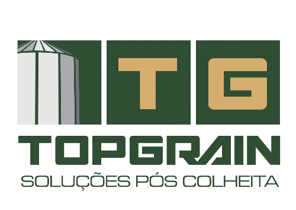
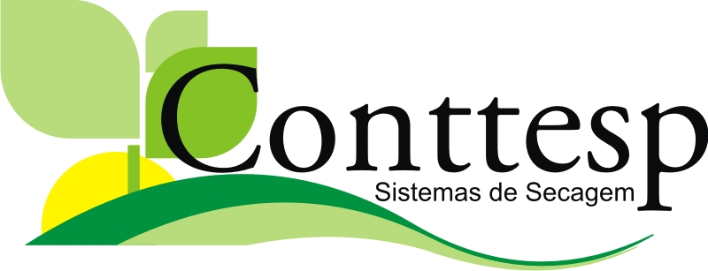
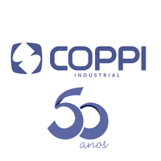

Atua na fabricação de equipamentos de recebimento, secagem e armazenamento de grãos, com máquinas de pré-limpeza, secadores, silos de armazenagem e expedição, elevadores, transportadores tipo drag e redler e transportadores de correia.

A TOPGRAIN tem como objetivo fornecer uma linha de produtos para o beneficiamento e armazenamento de grãos, contendo um avanço tecnológico significativo em relação aos sistemas tradicionais.

Atua no setor de agronegócios produzindo geradores de calor, com fogo indireto, preservando assim a integridade do grão (sem odores), sistema estático de secagem, controlador de secagem, mesclador de grãos para silos e sistema de secagem com descarga automatizada.

A COPPI tem forte atuação no setor de manutenção industrial, oferecendo serviços de recuperação de instrumentos com oficina técnica credenciada, treinamentos técnicos e outros...